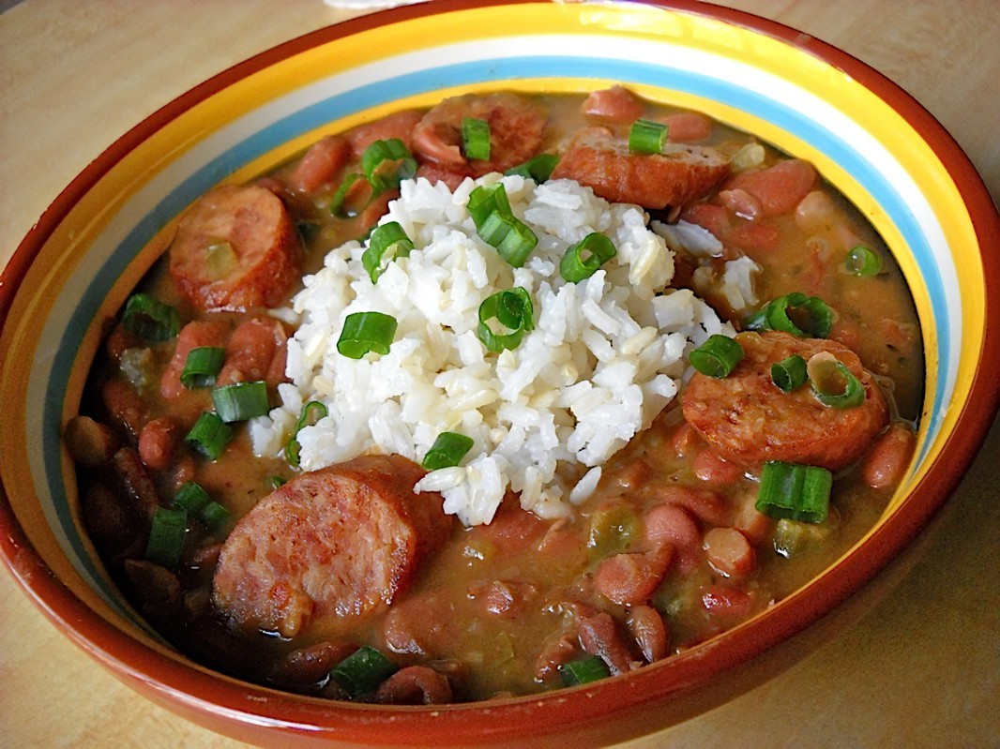

New Orleans Red Beans and Rice

Red Beans and Rice finds its origins from New Orleans Creole kitchens back in the 1700 and 1800’s.
The flavors of Creole cooking derive from several cultures combining French, Spanish, African,
and Caribbean cuisines.
Indigrents
- 1lb of red beans
- Olive Oil
- Andouille smoked sausage
- Onions
- Green bell pepper
- Celery chopped
- Garlic
- Thyme
- Bay leaves
- Oregano
- Creole seasoning
- Salt
Pepper
- White Rice
Instructions
- Soak beans in a pot of water overnight. Drain.
- Brown sausage, then remove to a plate.
- Sauté vegetables, garlic and herbs.
- Add beans, Cajun seasoning and water. Bring to a boil.
- Gently simmer the pot, uncovered, for about 2 hours.
- Stir in vinegar and browned sausage, season with salt and pepper, and simmer for 5-10 more minutes.
- Serve over cooked rice and garnish with fresh parsley